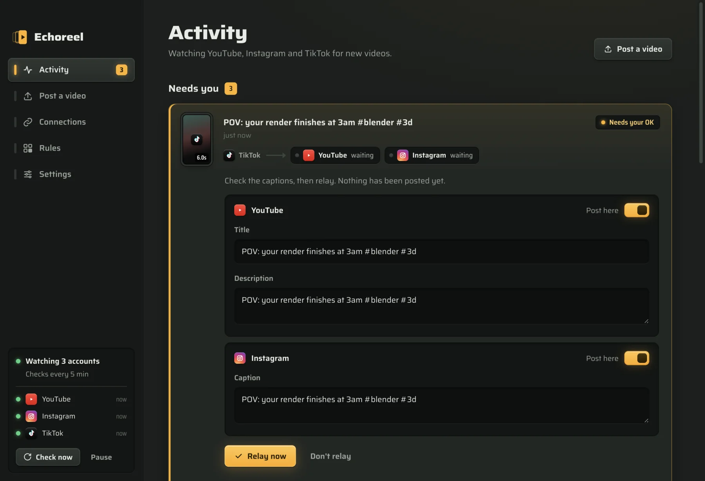

Post once.
Upload a video to YouTube, Instagram or TikTok. Echoreel notices, then posts the same video to your other accounts, with your caption, in the right shape.
Free and open source, for macOS 12+ and Windows 10 and 11.
You choose the routes.
Each row is where you post. Each column is where it can go. Light a key and that route is live. This is the same panel you get in the app, so try it.
Long YouTube videos can stay on YouTube, and videos can wait for your OK before anything is posted. Both are a switch in the app.
| When you post on | also post to | ||
|---|---|---|---|
| YouTube | TikTok | ||
What happens to each new video
- SpottedEvery few minutes, Echoreel checks your accounts for anything new. Videos that were there before you connected are left alone.
- CopiedIt downloads your original file at full quality, on your computer.
- FittedCaptions carry over. A landscape video gets a vertical 9:16 frame over a blurred copy of itself, so it looks right as a Reel or a TikTok.
- PostedIt uploads to each account on that route, or gets it ready for you to finish in one click where a platform requires it.
- RememberedEchoreel keeps a fingerprint of the video, so its own copy is never relayed back to where it came from.
Everything waits where you can see it
Each video shows the route it took and a lamp for every account: green when it's posted, amber when it needs you.

Built not to make a mess
- It never loops
- Echoreel recognises its own copies, and re-uploads of the same video, by comparing frames. Nothing bounces back and forth.
- It waits if you want
- Videos can wait for your OK, wait a few minutes so you can fix a typo, or go straight out.
- It tries again
- A failed post is retried after 1, 5, 15, 60 and 180 minutes. An expired sign-in asks you to reconnect.
- Your accounts stay yours
- Echoreel signs in with your own developer apps and stores sign-ins encrypted on your computer. There's no Echoreel server and no analytics.
- It updates itself
- New versions download in the background, are checked against a signing key built into the app, and install when Echoreel is idle.
- It's free
- MIT licensed, with the full source on GitHub.
What each platform allows
Each platform limits apps it hasn't reviewed. Echoreel works within those limits and tells you when a video needs one tap from you. Setup takes about 10 minutes per platform, with a guide in the app.
You need
A Google Cloud project with the YouTube Data API.
How it posts
Google keeps uploads from new projects private until it approves them. Until then, Echoreel prepares the video, copies the title and opens YouTube Studio, and you finish with one drop.
You need
A Creator or Business account (free to switch) and a Meta developer app.
How it posts
Reels post directly. Instagram fetches the video through a temporary Cloudflare link that closes after a few minutes.
You need
A TikTok developer app in sandbox mode.
How it posts
Videos arrive in your TikTok inbox. Tap the notification in the TikTok app to post.
Installing
Echoreel isn't signed with a paid Apple or Microsoft certificate yet, so your computer asks once before opening it.
macOS, Apple silicon or Intel
Open the .dmg and drag Echoreel into Applications. If macOS says it can't check the app, open System Settings, then Privacy & Security, scroll down and click Open Anyway. Run Echoreel from Applications, not from the disk image, so updates can install.
Windows 10 and 11
Run the installer. If SmartScreen says it protected your PC, click More info, then Run anyway. Echoreel installs for your user account and starts with Windows.
Does my computer need to stay on?
Yes. Echoreel runs on your computer, so it relays while the computer is awake. Anything you post while it's off is picked up at the next check.
What does Echoreel talk to?
Only YouTube, Instagram and TikTok, GitHub (for updates) and, while posting a Reel, Cloudflare's temporary link service. Sign-ins are encrypted with the macOS Keychain or Windows DPAPI.
Post once.
Pick your computer. The download comes straight from GitHub.